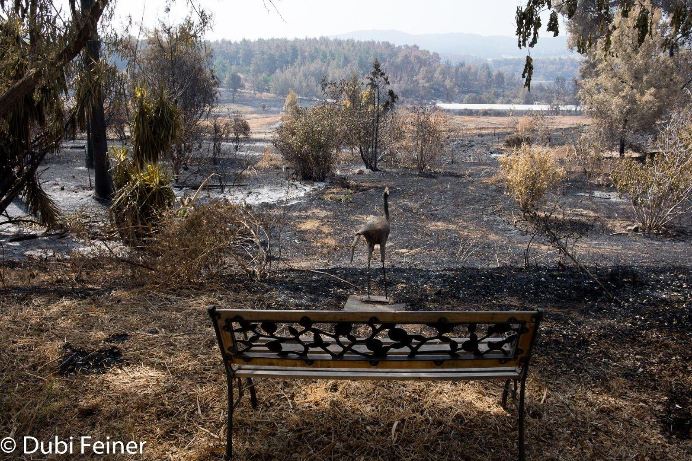

In Kibbutz Harel near Jerusalem, ten structures burned down and 5,000 dunams (1,200 acres), including 3,000 dunams of forest land. The firefighting services believe the fire was caused by a short circuit and due to the heat wave the fire spread rapidly. Firefighting jets from Egypt, Greece, Cyprus, Croatia and Italy helped Israel put out the flames In Tel Aviv, temperatures reached up to 45 degrees Celsius (113 Fahrenheit) on Thursday, while the average in Israel was 40 degrees Celsius (104 Fahrenheit).
Wildfires rage through Israel1,700 fires were extinguished over the past three days. 1,500 firefighters, together with volunteers as well as employees from the Jewish National Fund and Nature and Parks Authority participated in the efforts to stop the fires.
The infrastructure of Harel was severely damaged, the repair work and renovations are massive. The economic damage still being assessed has already totaled hundreds of thousands of shekels. The ecological destruction is also daunting. Recovery efforts will require targeted social service assistance, trauma relief, and capacity building. The GOI (Government Of Israel) is currently completing a needs assessment for the interim period and the medium-long term rehabilitation. The fire also caused a bio-hazard due to the damage to buildings that had Asbestos. Teams are working on the kibbutz to dispose of all the hazardous materials.
Immediate Relief – Providing immediate relief to evacuees, respite activities for children and youth, trauma relief and professional support is a major task
Aftermath – This category includes programs designed to address the mid- and long-term needs resulting from the forest fire. In broad brush strokes these programs all include one or more of the following:
Aftermath programs may require additional planning prior to implementation based on ongoing needs assessments and coordination with relevant agencies.
In addition, the destruction will require significant investment in rebuilding the physical infrastructure.
Total costs of renovating, rebuilding and repairing the damage will be in the millions. There is serious damage to the infrastructure, electricity, water and gas, the main buildings of the agricultural sector were destroyed, and some crops were destroyed. The Kibbutz infrastructure, homes and personal belongings are insured for 17 million shekels ($4,722,222), however the overall damage is much greater than the insurance coverage. Undoubtedly there will also be a loss of income from the various different branches and services provided by Harel. Initial expenses involved in cleaning the kibbutz, removing asbestos and rebuilding the infrastructure has already cost several million shekels, several families have experienced a loss of income after their places of work were completely destroyed. Rebuilding the 5 houses that were destroyed and the other homes that were damaged will cost at least $3,000,000, not including the loss personal effects which probably will never be replaced.